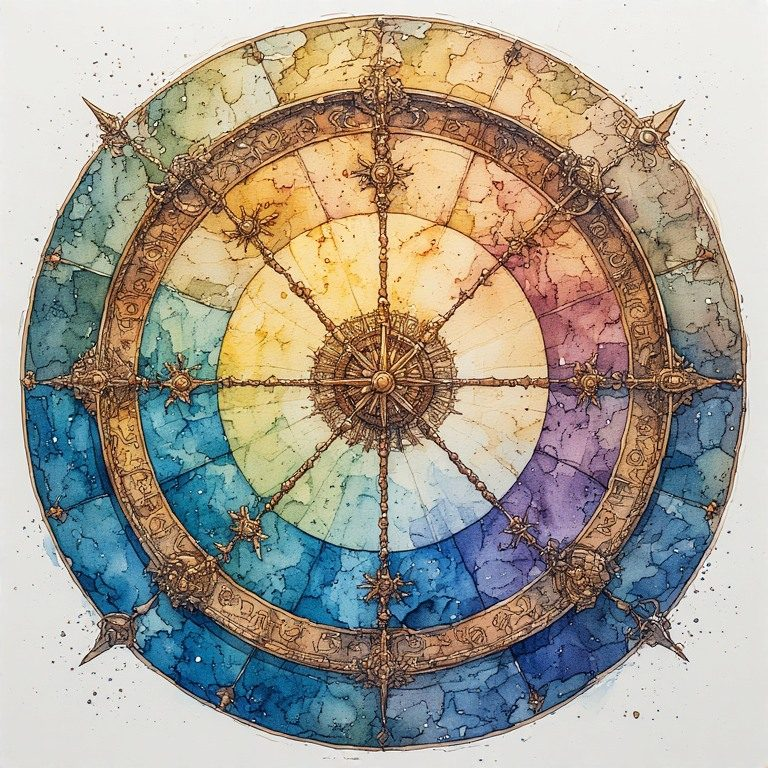

Part Two: The Sediment
← Part One: The Eleventh Idea · Radical Immanence Collection · Part Three: The Wheel →
Before you can look forward, you have to look down. The vertical axis runs in both directions, and the weight pressing up from below is closer, more immediate, and often harder to name than the weight pressing forward.
The sediment is everything you are made of that you did not choose. The language. The grief. The assumptions. The history. The particular injuries and gifts that your particular family, community, and moment deposited in you.
Reading the sediment is not the same as being trapped by it. It is the honest acknowledgment of what the ground is actually made of. You cannot build fairly on ground you are pretending is neutral. And you cannot carry what you do not know you are carrying.
What You Received That You Did Not Ask For
Every person alive received a great deal they did not ask for. Language, which is not neutral. Categories of thought, which were built by people with interests. Grief that was passed down before you had words for it. Particular shapes of love and particular shapes of wound, deposited in you before you were old enough to have preferences about them.
None of this is a list of grievances. It is a description of what transmission actually looks like. You are alluvial. The soil you are made of came from upstream. That is not a problem to solve. It is a fact to see clearly.
When you see it clearly, something changes. The assumption that felt like just how things are becomes visible as a construction. The grief that felt like yours alone becomes recognizable as something older, something carried forward. The particular shape of your difficulty stops feeling like evidence of a personal failure and starts feeling like what it is: a deposit you received, which you are now in relationship with, which you have some choice about what to do with.
What did you receive from the people who formed you that you have been carrying as if it were simply your own?
The Ancestors in the Ground
Most traditions locate the dead somewhere else: in an archive, in memory, in a supernatural realm. This workbook locates them differently. The ancestors are in the sediment. They are in the soil that grew your food. They are in the water cycle. They are in the language you think with. Their presence is geological, not supernatural.
This changes your relationship to them. When the dead are in an archive, you can choose whether to consult them. When they are in the ground you are standing on, you are already in relationship with them whether you choose to be or not. You are built from what they left behind. You breathe air they breathed. You use categories they built. You carry wounds they could not heal.
This is not mystical. It is material. The atoms that constitute your body have constituted other bodies. The language that constitutes your thought was shaped by people long dead. The grief in your chest has ancestors.
What the ancestors need from you is not worship or even gratitude. What they need is honest reading. Not a selective archive of the beautiful parts, but an honest accounting of what was deposited: the love and the harm, the wisdom and the violence, the things that built you up and the things that will require generations to repair.
What part of the sediment beneath you is hardest to look at honestly? What would an honest reading of it require of you?
The Grief That Was Not Originally Yours
There is grief in you that did not begin with you. You can feel it when you try to locate it. It is older than your memories. It has a different texture than the grief you can trace to specific losses. It arrived in you through the people who formed you, who received it from the people who formed them.
This kind of grief is not pathology. It is transmission. Every family, every community, every culture carries its losses forward. Some losses are so large, so unprocessed, so culturally forbidden that they travel for generations before anyone is in a position to name them.
You may be in that position. You may be the person in your line who is finally able to look at what has been carried. That is not a burden you chose. It may be a role you find yourself in.
The crossing point practice with inherited grief is not resolution. Resolution of inherited grief is usually not available to one person in one lifetime. The practice is witnessing. Honest naming. Carrying what you carry with knowledge of what it is, rather than carrying it unnamed.
| You do not have to resolve the inherited grief today. You just have to let it be named. To say: this is older than me. This came from somewhere. I am carrying it forward, and I can carry it with more honesty than I received it. |
|---|
What grief in you feels older than your own life? What do you know, or sense, about where it came from?
Here Is Enough.
